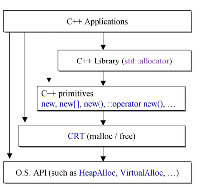

C++内存管理|01 分配和释放的四个层面
内存的使用是稍底层一些的程序，或者性能要求严格的程序都是非常有讲究的一块。从程序的分层设计的角度来看，一般有四个层面上内存的分配和释放可以共给我们开发人员使用。本篇就介绍这这个层面上内存分配相关的一些函数接口。
1. 站在高处思考
从一个比较高的角度来看，内存管理说到底就是使用OS提供的API或是使用运行在OS之上的Runtime或者更为上层的SDK对内存进行申请和释放。C/C++中内存管理是个经久不衰的话题，因为C/C++不像其它语言那样拥有自己的GC机制。这也是C/C++为人诟病的地方，特别对于使用C/C++经验不丰富的程序员来说经常会出现内存泄漏这类问题，而且出现了内存泄漏往往问题的根源也不那么容易找到，尤其是在服务端程序中，可能运行了一个礼拜发现服务器越来越慢，最终导致内存资源耗尽而无法处理客户端请求。
2. 内存管理的四个层面
回到我们内存管理的角度来看，无非就是申请和释放这两个操作，为什么问题却变得那么的复杂呢？直接从下面这张图上看起。

图中我们看到了在各个不同的层面上使用的内存分配和释放的函数或者关键字。当然应用程序开发的程序员可能比较熟悉的是new/delete, malloc/free这几个操作，基本上使用的也是这几个。那剩下的那几个是什么呢，我们先来对他们进行一一的说明。
3. STL中被我们忽视的allocator
C++ library std::allocator， 熟悉STL的人可能了解这个是什么东西。比如我们在使用容器的时候。比如说vector，我们好像从来都不用关心vector的容量有多大，我们只管push_back向容器中装入东西就行了。因为STL这个封装好的库会帮我们做好后面内存分配等一系列的工作。是谁在负责这部分工作的呢？std::allocator, 对于不同版本的C++实现（MSC， GNU C，…）它们的实现方式其实是不一样的，但是C++标准委员会给他们定义了一套接口标准，所以我们在使用它们的时候是一样的，这也就是为什么我们写的C++程序可以在不同的平台上进行编译和运行（当然，能在不同平台上编译的程序肯定是不能使用平台特有的API接口的）。
4. 最熟悉的new和delete
C++ Primitives, 这里列举的我们最常使用的new和new[]，new()和::operator new()对于应用层开发来说使用的并不是很多，当然如果写过C++内存池可能会涉及这些。
5. 不常用的malloc和free
C Runtime Library, 可能我们会经常听说Runtime这个词，到底什么是Runtime呢？暂且我们可以理解它是一种运行时环境，提供我们运行时的调用支持。注意到这一层其实是C语言层的。
6. 好像没听说的HeapAlloc
HeapAlloc属于OS API这一层, 这层可能大多数的开发人员都不是很了解他们到底什么内容。是的，在应用程序开发，或者是造能跨平台(Windows, Linux)轮子的开发人员来说这些一般都是用不到的。这部分只有在比较底层的驱动开发中会使用到。因为驱动程序不同与应用程序，它运行的环境决定了没有比较上层的函数可以调用，而且驱动必须要的是能高效的运行，占用资源也必须尽量的少。还有很重要的一点就是驱动是不需要跨平台的（这里说的是底层驱动）。这也同时回答了为什么应用程序不去使用这一层的调用了。因为使用了这一层的调用，一来需要自己设置和管理的东西太多了，容易出现自己hold不住的bug,另一方便，程序的可移植性太差了。
7. 回味&总结
说到这里我们再来谈谈为什么内存管理这么容易出现bug。从比较简单的角度来看，应用层开发人员有人喜欢使用new进行内存的申请，因为书中告诉我们要尽量的使用new, new的内容是带有类型的，会调用构造函数等等，但是有些人就喜欢使用malloc/free，当然这并不意味着使用它们的人不高明。他们可能觉得malloc使用起来更加的灵活，也确实是这样。那么问题就来了，如果把他们混合使用了会有什么结果呢？另一个角度来看，我们new了一个对象，然后使用它的基类指针指向它，然后我们释放的时候delete的是基类的指针，这时候又会有什么结果呢？尤其是在层级关系比较复杂的代码中，这类问题很容易出现。当然出现内存泄漏的原因还有许多，后续我们慢慢道来。好了，这一篇就写到这里。
- 原文作者：Binean
- 原文链接：https://bzhou830.github.io/post/20180106C++%E5%86%85%E5%AD%98%E7%AE%A1%E7%90%8601/
- 版权声明：本作品采用知识共享署名-非商业性使用-禁止演绎 4.0 国际许可协议进行许可，非商业转载请注明出处（作者，原文链接），商业转载请联系作者获得授权。